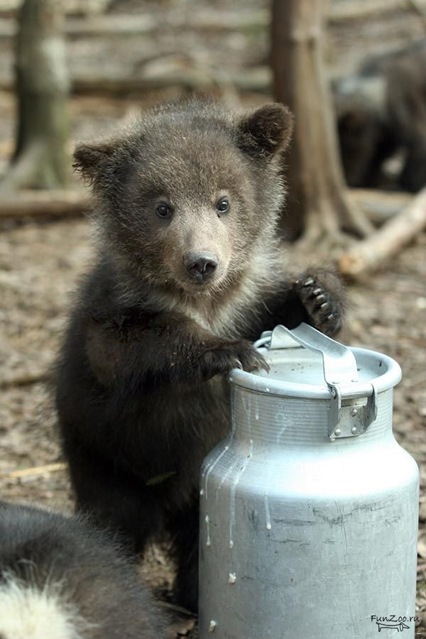

🐻❄️Белые медведи
Белый медведь – самый крупный представитель семейства медвежьих и отряда хищных (если не включать в отряд хищных ластоногих), масса животного может достигать 800 кг. Средний вес самца 400–450 кг, длина тела 200–250 см. Самки заметно мельче: средний вес 350–380 кг, длина тела 160–250 см).

🧸Медвежата
Появляется на свет медвежонок в берлоге, устраиваемой под большими камнями, в расщелинах, в выворотнях корней, иногда в пещерах или больших норах. Собственно «спальное место» в берлоге не очень велико, особо не разлежишься, но медведица к его обустройству подходит крайне ответственно. Зимнее жилище выстилается мхом, сухими листьями, хвойными ветками. Как правило, медведица укладывается в берлогу накануне сильных снегопадов. Ее спячка – это не анабиоз, а именно сон; правда, резко замедляются процессы обмена, реже дыхание (где-то один раз в 4 минуты), но сохраняются и нормальная температура тела, и способность восстановить активные действия мгновенно. Как уточняет ряд знатоков, потревоженная в берлоге медведица, даже если там есть детки, убегает и обратно практически никогда не возвращается. Полагают, что материнский инстинкт у нее развивается только по мере воспитания медвежат. Рожает медведица не каждый год, как правило, в январе, в среднем – 1-2 детенышей, но сотрудники особо охраняемых территорий Байкала отмечают, что встречаются случаи, когда в одной берлоге появляется 3 медвежонка.

🧸 🐻 🐼 🐻❄️Медведи разные
Это самые крупные из современных наземных хищных зверей. Белые медведи достигают длины тела 3 метра при массе до 725 и даже 890 кг; малайский медведь — самый мелкий представитель медвежьих: в длину он не превышает 1,5 метров, высота в холке составляет всего 50–70 см; масса – 27–65 кг. Самцы на 10–20 % крупнее самок.